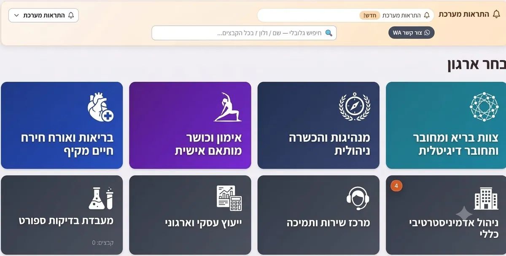

מערכת ניהול מסמכים דיגיטליים היא מערכת שמאפשרת לעסק להפוך מסמכים פיזיים וקבצים מפוזרים (PDF, סריקות, מיילים, וואטסאפים) לרשומות דיגיטליות מסודרות, מתויגות וניתנות לחיפוש - כך שכל מסמך נגיש תוך שניות, במקום לחפש בתיקיות, במגירות או בהיסטוריית וואטסאפ. ההבדל המרכזי בין "יש לנו סריקות בגוגל דרייב" לבין מערכת ניהול מסמכים דיגיטליים אמיתית הוא התהליך: קליטה אוטומטית, מיון, שיוך ללקוח או לתיק, ומעקב סטטוס - לא רק אחסון.
הבעיה: דיגיטציה חלקית היא גרועה כמו בלי דיגיטציה
רוב העסקים כבר "עברו לדיגיטל" במובן הבסיסי - יש סריקות, יש קבצי PDF, יש תיקיות בענן. אבל זו לא מערכת ניהול מסמכים, זו רק העברה של הבלגן מהנייר למסך. מסמך שמגיע בוואטסאפ נשמר בטלפון של עובד אחד. חשבונית שנסרקה נשמרת בתיקייה בלי שם ברור. טופס שהלקוח שלח במייל נתקע בתיבת דואר ואף אחד לא יודע אם טופלה. התוצאה: אותן בעיות של ניהול ידני - חיפושים ארוכים, מסמכים אבודים, כפילויות - רק עם קבצים דיגיטליים במקום נייר. הדיגיטציה האמיתית צריכה לכלול קליטה ממקורות שונים (מייל, וואטסאפ, טופס אתר, סריקה), תיוג ושיוך אוטומטי, ומעקב סטטוס לכל מסמך - אחרת זה רק ארכיון יקר יותר.
הפתרון: FileManager
זו בדיוק הסיבה ש-A.L Systems, בניהולו של אדיר לוי משדרות, בנתה את FileManager - מרכזת את כל המסמכים הנכנסים לעסק - בין אם הגיעו במייל, בוואטסאפ, בטופס אתר או בסריקה - למאגר דיגיטלי אחד, עם שיוך אוטומטי ללקוח או לפנייה, תיוג לפי סוג מסמך, ומעקב סטטוס (התקבל, בטיפול, הושלם) כדי שאף מסמך לא ייעלם בדרך:

- קליטה ממספר ערוצים - מסמכים שמגיעים במייל, בוואטסאפ, בטופס אתר או בסריקה נקלטים לאותו מאגר אחיד, בלי צורך להעביר ידנית בין תוכנות.
- שיוך אוטומטי ללקוח או לתיק - המערכת מזהה למי שייך המסמך ומצרפת אותו לתיק הלקוח הקיים, כך שלא נוצרים קבצים יתומים בלי הקשר.
- תיוג וסיווג לפי סוג מסמך - חשבונית, חוזה, אישור, טופס - כל סוג מקבל תיוג שמאפשר חיפוש וסינון מהיר בלי לפתוח כל קובץ בנפרד.
- מעקב סטטוס לכל מסמך - אפשר לראות מיידית אילו מסמכים טופלו, אילו ממתינים לבדיקה ואילו חסרים - בלי לשאול "מי טיפל בזה".
- חיפוש מהיר במקום דפדוף - חיפוש לפי שם לקוח, תאריך או סוג מסמך מחזיר תוצאה תוך שניות, במקום לעבור תיקייה-תיקייה.
- הפחתת תלות באדם ספציפי - כשמסמך נשמר בטלפון של עובד אחד, העזיבה שלו היא סיכון תפעולי; במערכת מרכזית המידע שייך לעסק, לא לאדם.
undefined
undefined
דיגיטציה זה תהליך, לא פעולה חד-פעמית
טעות נפוצה היא לחשוב שדיגיטציה מסתיימת ברגע שסורקים את ארכיון הנייר הישן למחשב. בפועל, מסמכים ממשיכים להיכנס לעסק כל יום ממקורות שונים, וכל מקור חדש הוא עוד נקודת כשל פוטנציאלית אם אין לו מסלול קליטה ברור. מערכת ניהול מסמכים דיגיטליים צריכה להתייחס לדיגיטציה כתהליך שוטף: כל מסמך נכנס, מזוהה, משויך ומתויג באופן עקבי - בלי קשר אם הגיע היום או לפני שנה, ובלי קשר לערוץ שבו נשלח.
למה חיפוש וסינון חשובים יותר מאחסון
הרבה פתרונות דיגיטציה מתמקדים באחסון - כמה מקום יש, כמה קבצים אפשר לשמור. אבל הבעיה האמיתית בעסקים היא לא חוסר מקום, היא זמן איתור. מסמך ששמור אבל לא ניתן לאיתור מהיר שווה בדיוק כמו מסמך שאבד. מערכת שמאפשרת חיפוש וסינון לפי לקוח, תאריך, סוג מסמך וסטטוס היא זו שבאמת חוסכת זמן - לא כמות האחסון.
אבטחת מידע בתהליך הדיגיטציה
כשמסמכים רגישים כמו חוזים, תעודות זהות או מסמכים פיננסיים עוברים לדיגיטל, נדרשת תשומת לב לשליטה בהרשאות - מי יכול לראות מה, ומי יכול לערוך. מערכת ניהול מסמכים דיגיטליים צריכה לאפשר הגדרת הרשאות לפי תפקיד, כך שלא כל עובד רואה כל מסמך, בניגוד לתיקיית וואטסאפ או תיקיית דרייב משותפת שבה לכולם יש גישה לכל דבר.